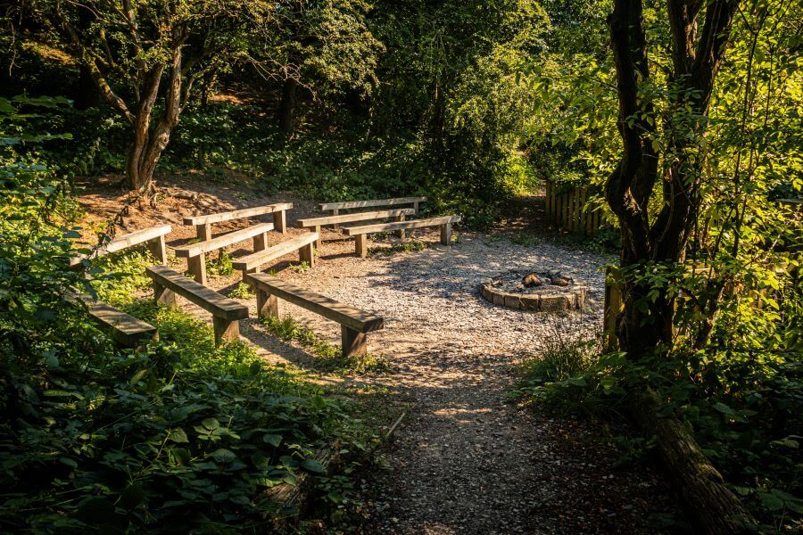

About
Map and Areal Photo


{kind=link}
- • Large Field - Suitable for a troop camp with several patrol tents, dining shelters and leader tents. Has an altar fireplace and water point.
- • Maufe - Suitable for a troop camp with several patrol tents, dining shelters and leader tents. Has two altar fireplaces.
- • D of E - Takes a patrol tent or two/three hike tents. Has an altar fireplace.
- • Scott - Takes a patrol tent or two/three hike tents. Has an altar fireplace and water point.
- • Sunrise - Takes a patrol tent or two/three hike tents. Has an altar fireplace and water point.
- • Back of Beyond - Quiet hideaway at bottom of site. Has alter fireplace and suitabkle for x1 large tent.
- • On site car park for around 15 vehicles. Additional street parking available nearby.
Capsite Details
The maximum number of campers is set at 75.
Disabled Visitor

Campfire and Worship Area
Campfire and Worship Area
Campfire and Worship Area

Camping Field
Large camping field, well suited to larger groups. Close to the toilet/shower block.
Scott Patrol Site
Smaller camping area for smaller groups. Next to water tap and outdoor cooking area.
Duke of Edinburgh
Smaller camping area for smaller groups / D of E groups.

Mauf Camp
Large campstie with cooking area.
Back of Beyond Camp
Medium campsite with cooking area.

Sunrise Patrol Site
Small campsite with cooking area.
Toilet Block
Brand new camping toilet block with showers x4
Accessable Shower/Toilet
Brand new camping toilet block with showers with a disability friendly wet room
Toilet Block
Brand new camping toilet block with showers
Washing Up Area
Area to wash up with cover from the rain
Outdoor Gazebo
Shelter from the rain in our outdoor gazebo
Games area
Field perfect for playing games.
Activity Area
Ideal for playing games.

Middleton Woods
Adjacent to extensive woodland
{kind=link}
{kind=link}
{kind=link}
{kind=link}
{kind=link}
{kind=link}